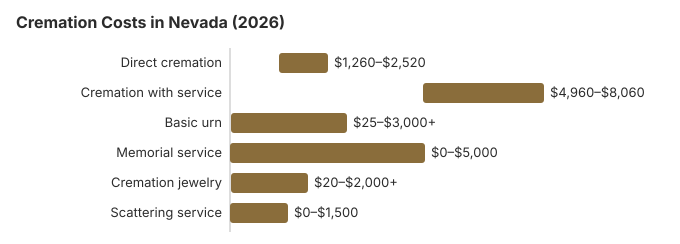

Cremation Costs in Nevada (2026)
Nevada has no minimum waiting period before cremation (NRS 451.660), so once the death certificate is signed and the authorizing agent has signed the crematory's form, a cremation can go ahead. Our estimates put a direct cremation at about $1,800 and cremation after a full service at about $6,200, a $4,400 difference. About 72% of Nevadans are cremated, well over NFDA's 63.4% national projection for 2025.
Nevada Cremation Tiers
Direct Cremation
- Least expensive Nevada tier
- No service before the cremation
- Transfer straight to the crematory
- Ashes handed back to the family
- Memorial whenever the family is ready
Cremation with Service
- Full funeral, then cremation
- Visitation can be included
- Held at a funeral home or church
- Basic urn usually part of the package
- Closest to a traditional funeral
Nevada Cremation Line Items
| Charge | Nevada estimate | Typical spread |
|---|---|---|
| Direct cremation | $1,800 | $1,260 – $2,520 |
| Cremation with service | $6,200 | $4,960 – $8,060 |
| Basic urn | $50 – $300 | $25 – $3,000+ |
| Memorial service | $500 – $2,000 | $0 – $5,000 |
| Cremation jewelry | $50 – $500 | $20 – $2,000+ |
| Scattering service | $200 – $600 | $0 – $1,500 |
Where the Nevada figures come from: our cost model, not a survey of Nevada crematories, and none of them is a quote or professional advice. See our method and our disclaimer.
State sources: Nevada Funeral and Cemetery Services Board; NRS 428.090.

Reading a Nevada Price List
A Nevada General Price List should show direct cremation as a single line, which we estimate at about $1,800, and list the service, viewing and urn separately; with a service the total we estimate is about $6,200. Neighboring states sit close by: Arizona and Utah at about $1,600, Oregon at about $1,900 and California at about $2,200 for a direct cremation.
Cremation Resources
- Funeral Consumers AllianceNonprofit advocacy: compare cremation providers
- Cremation Jewelry GuideMemorial keepsakes and remembrance options
- Cremation vs. Burial CostsSide-by-side cost comparison
- Pet Cremation CostsOptions and prices for pet cremation and memorials
- Final Expense InsuranceCoverage options to help pay for cremation costs
Compare Funeral Costs
- Average Funeral Cost in 2026National cost breakdown with real prices
- Cremation vs. Burial Cost ComparisonSide-by-side price comparison to help you decide
- Funeral Cost BreakdownEvery line item explained: know what you're paying for
- Cheapest Funeral OptionsLower-cost alternatives, with typical price ranges
- Direct Cremation: Most Affordable OptionNFDA 2023 median $2,645 with a family-supplied container (latest available)
- How to Compare Funeral PricesStep-by-step guide to getting the best price
Who Can Authorize a Nevada Cremation
The order of authority under Nevada law:
- Nevada ranks who may order a cremation in NRS 451.024: a person named in a valid document or notarized affidavit comes first, then the spouse, an adult son or daughter, either parent, an adult brother or sister, a grandparent and a guardian. When several adult children share that rank, a Nevada funeral home or direct cremation facility may insist that a majority of them agree.
- If none of those relatives can be found, NRS 451.024(2) lets any adult who knew the person sign an affidavit stating how long they knew them and accepting legal and financial responsibility, and that person then has no claim against the estate for the cost.
- Ask the Nevada provider, before you sign, when the ashes will be ready and how they will come back to you, and whether the price includes a certified copy of the death certificate.
Keeping Nevada Cremation Costs Down
How Nevada families can spend less:
- Ask three Nevada providers for written General Price Lists and set the direct cremation lines side by side.
- Choose a direct cremation provider on what the price covers: compare each Nevada provider's direct cremation line, from transport and the container to the permit and any certified death certificates, and weigh what is included against the provider's reputation. State law sets handling standards for all of them. Under NRS 451.675, an unembalmed body may be held no longer than 24 hours unless the holding room is refrigerated, and NRS 451.690 requires a signed receipt at pickup and a sealed, tracked package if the ashes are shipped.
- Scattering costs little under NRS 451.700: private land with the owner's written consent, a public waterway or the air, or a cemetery's dedicated scattering area, once the ashes are reduced to particles of one-eighth inch or less.
Frequently Asked Questions
How much does a Nevada cremation cost?
Our Nevada estimates run from about $1,800 for a direct cremation, with transport, the cremation and return of the ashes, to about $6,200 when a viewing or funeral comes first.
What cremation packages do Nevada providers sell?
Two tiers are priced on this page. Direct cremation, about $1,800, has no service or viewing; the body is cremated and the ashes go back to the family. Cremation after a funeral home service runs about $6,200, which is $4,400 more.
Is there a waiting period for cremation in Nevada?
Nevada sets no minimum wait (NRS 451.660), so a cremation can follow as soon as the crematory has the signed death certificate and the authorizing agent's written consent. The cremation rules section further down covers the funeral-director question and the board's complaint number.
Where may ashes be scattered in Nevada?
Yes, under NRS 451.700. Cremated remains may be scattered at sea or over a public waterway or by air, from individual closed containers; placed in a dedicated area of a cemetery; or scattered on private property with the owner's written consent. They must first be reduced to particles of one-eighth of an inch or less.
Lake Tahoe straddles two states with different rules: Nevada's law allows scattering over its part of the lake, while the California side falls under California's ban on scattering in lakes. The Nevada Funeral and Cemetery Services Board (775-825-5535) licenses crematories.
Why is Nevada's cremation rate so high?
Nevada has the most mobile population in the country. Only 33.7% of U.S.-born Nevadans live in the state where they were born, the lowest share of any state (Census Bureau, 2023 American Community Survey), so a family plot is often in another state and cremated remains are far easier to take home.
Religion and cost add to it. About 35% of Nevada adults are religiously unaffiliated (Pew Research Center, 2023-24 Religious Landscape Study), and direct cremation starts around $1,800 here, against $6,200 for cremation with a full service. Nevada's 72% rate on this page compares with NFDA's 63.4% national projection for 2025.
How quickly can a Nevada cremation happen?
The Cremation Association of North America says the cremation itself takes from about 30 minutes to over two hours, followed by cooling and processing before the ashes are returned to the family. Direct cremation ($1,800) is quickest because no viewing or ceremony is involved, and with no minimum wait the permit is the main step (NRS 451.660).
Can a Nevada cremation follow a funeral?
No. For about $6,200 on our estimates, a Nevada provider will hold visitation and a funeral and then cremate.
More for Nevada
What a Nevada crematory must have in writing
A Nevada crematory may not proceed until a death certificate is signed and it has a written authorization on its own form, signed by the authorizing agent. The form identifies the person and states whether death came from a communicable or otherwise dangerous disease. It gives the agent's name, address and relationship to the deceased, and the agent confirms they know of no objection from anyone else with the right to control the remains. It also names who will collect the ashes, or where they will be sent (NRS 451.660; checked October 29, 2026).
- If the agent cannot be there: they can hand the authority to someone else with a signed written statement giving their name, address and relationship and the delegate's name and address. A crematory can rely on an order received by mail.
- Coroner cases: in Clark County the coroner's office says its required services are taxpayer funded at no cost to the family, and release to the chosen funeral home or crematory normally follows within 24 to 48 hours of the examination.
Cremation rules and help in Nevada
Crematories and the funeral homes that sell cremation in Nevada answer to the Nevada Funeral and Cemetery Services Board (775-825-5535).
Nevada is not among the nine states the Funeral Consumers Alliance lists as requiring a funeral director, but no Nevada crematory will proceed without the death certificate, the cremation permit and the next of kin's signed authorization.
Timing and permits: Nevada has no statutory waiting period before cremation; the crematory needs a signed death certificate and written authorization from the authorizing agent (NRS 451.660).
Nevada counties must arrange a burial or cremation for an eligible indigent person (NRS 428.090); Washoe County's Human Services Agency runs a burial and cremation assistance program with residency and income rules. (Source: NRS 428.090.) Social Security's $255 lump sum is paid only to an eligible Nevada spouse or child, and only if claimed within two years of the death.
Choosing cremation does not give up a Nevada veteran's cemetery benefit; urns can be interred in national cemeteries free of charge. Options in Nevada include Southern Nevada Veterans Memorial Cemetery (702-486-5920) and Northern Nevada Veterans Memorial Cemetery (775-575-4441). See cem.va.gov.
Next steps for a cremation in Nevada
- Ask whether a Nevada cremation price includes the death certificates and the permit fee, which some providers bill separately.
- Confirm who signs the Nevada cremation permit and when, so the memorial date is realistic.
- Ask the Nevada county human services agency about indigent cremation before choosing a crematory.
- A cremation provider that misstates its prices can be reported at 775-825-5535.